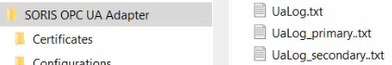
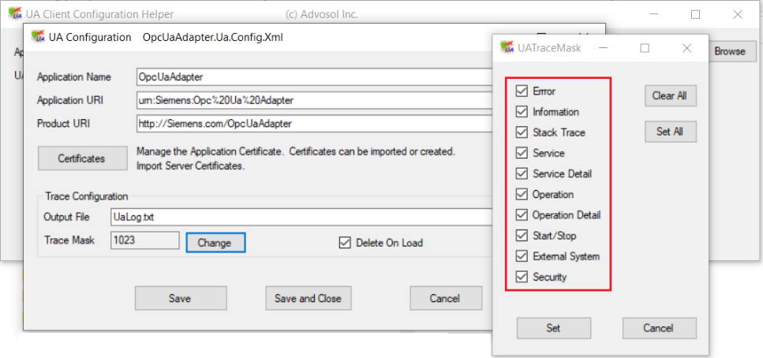

Enabling OPC UA Client Trace Logs
The OPC UA client trace log files are available in C:\Program Files (x86)\Siemens\SORIS OPC UA Adapter.

- [UaLog].txt: This file includes settings relevant to low-level logs.
- [UaLog]_[adapter instance name].txt: A log TXT file is also created and named after each adapter instance relevant to the specific adapter low-level logs.
You can configure additional trace logs in line with the following bit mask values:
Hexadecimal Value | Decimal Value | Log Type |
0x001 | 1 | Error |
0x002 | 2 | Information |
0x004 | 4 | StackTrace |
0x008 | 8 | Service |
0x010 | 16 | ServiceDetail |
0x020 | 32 | Operation |
0x040 | 64 | OperationDetail |
0x080 | 128 | StartStop |
0x100 | 256 | ExternalSystem |
0x200 | 512 | Security |
Do the following:
- Stop the OpcUaAdapter service.
- Navigate to C:\Program Files (x86)\Siemens\SORIS OPC UA Adapter, and do the following:
a. Run the UaClientConfigHelperNet4.exe file as Administrator.
b. Select the OpcUaAdapter.exe application, and in the UA Configuration Helper tool, click Edit UA Configuration.
c. Click Change to modify the Trace Mask.
d. Select the type of logs to enable and click Set.
e. Click Save and Close. - Restart the OpcUaAdapter service.
- In C:\Program Files (x86)\Siemens\SORIS OPC UA Adapter, check the content of the relevant TXT file (for example, [UaLog].txt or UaLog_[adapter service name].txt).

See also the following alternative solution:
- Open the OpcUaAdapter.Ua.Config.Xml file with an editor.
- Set the new TraceMasks value: the default value is 513.To trace ALL, set 1023. Then save the changes.
- Restart the OpcUaAdapter service.
- Check the contents of the log file (for example, [UaLog].txt or UaLog_[adapter service name].txt).